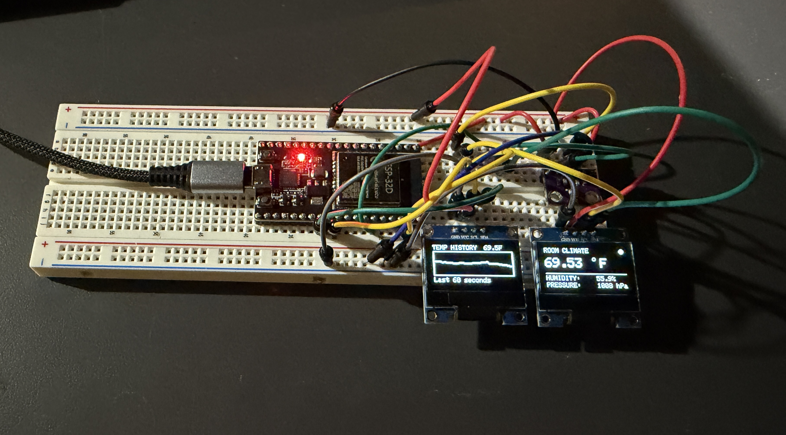

Digital systems / Lab project
FPGA Traffic Light Controller
A sensor-responsive highway and farm-road traffic light controller, developed in Verilog with AMD Vivado and implemented on a Digilent Zybo Z7-10 FPGA board.
Engineering portfolio / In progress
I'm Quinn, an ESET student at Texas A&M University with a mathematics minor. I'm exploring how code, circuits, and curiosity become working systems.
A growing collection of ideas, experiments, and projects
Digital systems / Lab project
A sensor-responsive highway and farm-road traffic light controller, developed in Verilog with AMD Vivado and implemented on a Digilent Zybo Z7-10 FPGA board.

Embedded systems / Personal project
A Wi-Fi-enabled environmental monitoring system that measures temperature, humidity, and atmospheric pressure. Sensor readings are displayed on dual OLED screens and transmitted to a cloud-connected web dashboard for visualization and historical tracking.
I'm studying Electronic Systems Engineering Technology at Texas A&M, with a minor in mathematics. I'm especially interested in embedded systems and how hardware and software work together to solve real-world problems.
I'm eager to build on my experience with C, digital logic, and circuit analysis through projects involving microcontrollers, sensors, and control systems. This portfolio documents what I build, how I approach challenges, and what I learn along the way.
This portfolio grows with my degree—from early lab work to the projects that bring everything together.
Python · C · C++ · Verilog
Digital systems · Circuit analysis · Embedded systems
Embedded systems · Microcontrollers · Hardware–software integration
IEEE · IEEE-Tech
Connecting classroom concepts to hands-on work.
Exploring the fundamentals of electronics, programming, and digital system design through coursework and hands-on projects.
Explore my background or get in touch.